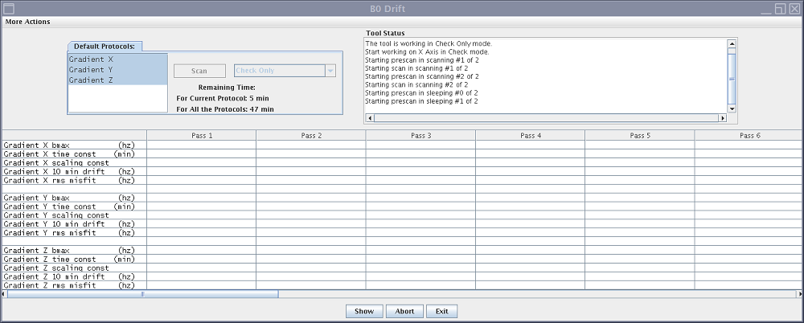
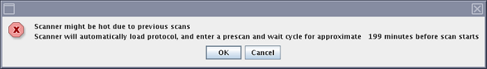
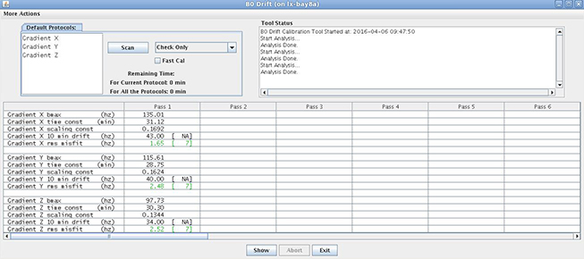

Note When running the Installation and Calibration Wizard on a system, select Check Only option first with factory calibration data. Wait for 2 hours before check. If the tool fails, select Calibrate Only to run the full calibration.
Procedure
Start the B0 Drift tool:
(For proprietary service tools) Make sure the class M service key or class C soft license is installed.
On the Common Service Desktop select Calibration > Calibration Wizard, and then click Click here to start this tool. The Calibration Wizard starts.
Select B0 Drift Calibration from the menu. Review and approve the pre- and post-dependencies, and then select Click here to start this tool. The B0 Drift window appears.Figure 1. B0 Drift window with X, Y, and Z axes

All three axes are processed together. However, you can select X, Y, and Z axis individually, depending on the progress of the installation. To select more than one axis, hold the Shift key while clicking the axis to select.
(For non-proprietary mode) Select Calibrate Only.
Note When running Calibration Only, if the system detectes that there is no complete cooling, a pop-up window shows as below. Click OK. The system will monitor the remaining time and system status, and then run the calibration automatically.

Click Scan.
Note Images are generated during B0 Drift calibration. Image quality is not relevant. Ignore any image quality issues or any error message related to image quality.
Note A complete run of B0 Drift calibration for all axes requires approximately 90 minutes to 13 hours and 30 minutes to complete. Wait 30 minutes to make sure that the B0 Drift tool is working correctly.
When B0 drift calibration completes, a screen displays the data for each axis.
Figure 2. B0 drift data screen

Click Exit to save results and exit the B0 drift tool.